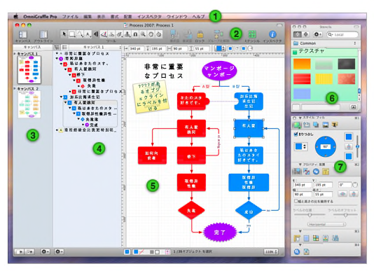

インタフェイス入門

 メニューバー。ほかの Mac OS X アプリケーションと同様に、これは、コマンドにアクセスする場所です。
メニューバー。ほかの Mac OS X アプリケーションと同様に、これは、コマンドにアクセスする場所です。  ツールバーを使用すると、選択項目のコントロールに簡単にアクセスできます。[表示] メニューから [ツールバーをカスタマイズ] を選択すると、ツールバー上によく使うツールを配置することができます。もっとも重要なことは、ツールバーが、ダイアグラム作成に使用されるツールパレットへのホームであることです。タイトルバーの右側の白いボタンを使用して、ツールバーを表示または隠すことができます。
ツールバーを使用すると、選択項目のコントロールに簡単にアクセスできます。[表示] メニューから [ツールバーをカスタマイズ] を選択すると、ツールバー上によく使うツールを配置することができます。もっとも重要なことは、ツールバーが、ダイアグラム作成に使用されるツールパレットへのホームであることです。タイトルバーの右側の白いボタンを使用して、ツールバーを表示または隠すことができます。  キャンバスサイドバーには、書類およびそこに含まれるレイヤーのすべてのキャンバスが表示されます。キャンバスをクリックすると、メインキャンバスビューで作業を行うことができます。
キャンバスサイドバーには、書類およびそこに含まれるレイヤーのすべてのキャンバスが表示されます。キャンバスをクリックすると、メインキャンバスビューで作業を行うことができます。  アウトラインサイドバーでは、選択したキャンバスの階層的なテキストベースのダイアグラムビューが用意されています。これは、多数のオブジェクトを迅速に作成し、相互に接続して、構造を再配置する場合に非常に役立ちます。また、リストサイドバーに切り替えると、選択したキャンバスの各レイヤーのすべてのオブジェクトの前後配置が表示されます。
アウトラインサイドバーでは、選択したキャンバスの階層的なテキストベースのダイアグラムビューが用意されています。これは、多数のオブジェクトを迅速に作成し、相互に接続して、構造を再配置する場合に非常に役立ちます。また、リストサイドバーに切り替えると、選択したキャンバスの各レイヤーのすべてのオブジェクトの前後配置が表示されます。  キャンバスビューは、実際に描画を行う場所です。描画ツールを使用して図形を作成したり、ラインと接続したりします。オブジェクトをドラッグして移動したり、オブジェクトのグループ化、表の作成など、この概要では説明できないほどのさまざまな操作を実行できます。
キャンバスビューは、実際に描画を行う場所です。描画ツールを使用して図形を作成したり、ラインと接続したりします。オブジェクトをドラッグして移動したり、オブジェクトのグループ化、表の作成など、この概要では説明できないほどのさまざまな操作を実行できます。  ステンシルウインドウには、さまざまな目的に対して事前作成された多数のオブジェクトが含まれています。OmniGraffle には、多数の優れたステンシルが用意されています。さらに、ほかの OmniGraffle により共有されているステンシルのオンラインリポジトリを検索することもできます。
ステンシルウインドウには、さまざまな目的に対して事前作成された多数のオブジェクトが含まれています。OmniGraffle には、多数の優れたステンシルが用意されています。さらに、ほかの OmniGraffle により共有されているステンシルのオンラインリポジトリを検索することもできます。  インスペクタには、キャンバス上で選択したオブジェクト、キャンバスそのもの、および書類全体を修正するために必要なコントロールがすべて含まれています。影響を与える種類別（スタイル、プロパティ、キャンバス、および書類）に整理された 16 のインスペクタがあります。
インスペクタには、キャンバス上で選択したオブジェクト、キャンバスそのもの、および書類全体を修正するために必要なコントロールがすべて含まれています。影響を与える種類別（スタイル、プロパティ、キャンバス、および書類）に整理された 16 のインスペクタがあります。